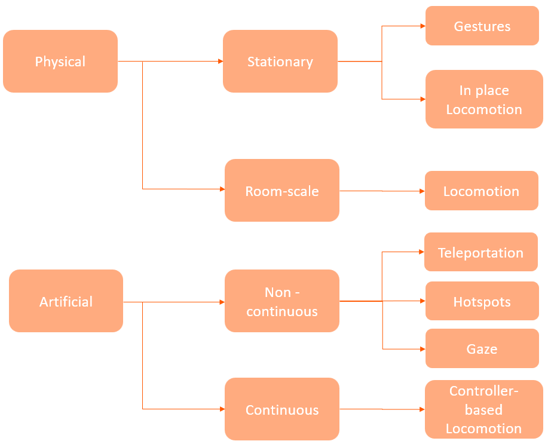

What are Navigation patterns?
Just like in other digital products, navigation is crucial in producing an immersive and accessible environment. In XR, navigation patterns refer to the various methods by which a user can navigate within a virtual environment, including techniques for menu navigation (moving from one scene to another) and user movement within a scene. For this project, we are looking at the latter, the methods a user can maneuver through a scene.
Making a thorough decision when choosing a navigation pattern is important, as it is directly connected to the user's experience. Depending on the pattern and the individual user, there might be a high chance of motion sickness. It is important to continuously test the pattern and make relevant adjustments to minimize this. The section below describes the possible patterns in XR.
The types of Navigation Patterns
 Navigation Pattern categorization.Physical Interactions
Physical interactions refer to the methods with which the user moves in an environment with the help of the physical body; this gives the user a more natural and intuitive feel.
Stationary Navigation
Stationary navigation refers to the navigation through a scene without having to move from the position in the real world physically.
In-place Locomotion
Locomotion is the method in which a user can move around freely within the virtual environment. In this Locomotion, the user remains in a fixed position where users simulate walking movements with their feet or arms. This movement is tracked and translated into actions within the virtual environment.
Gestures
Gestures can be used in navigation by triggering a defined hand movement or pose, which will be detected with hand tracking. The gesture can be used to control the direction and speed of the movement. This pattern can be helpful in scenarios in which a user only needs to do simple movements like moving forwards or backward. However, this technique has its drawbacks, such as if there are many gestures, they might be challenging to remember, or some people cannot perform these due to physical disabilities. Gestures can be very nice and playful; however, their implementation should be thought through, and the right use cases found.
Room-scale Navigation
This refers to the ability to physically move and navigate within a virtual environment and requires dedicated physical space with enough room for the user to move around safely.
Room-scale Locomotion
In this type of Locomotion, the user can move around a physical space mapped to a virtual environment. It allows the user to walk around and explore the virtual environment as they would in the real world. For this to be possible, the movements are tracked by sensors, typically mounted on walls or placed around the room. This is the most realistic navigation pattern, as the movement in the real world is directly copied into the virtual environment.
Artificial Navigation
Artificial navigation is a form of navigation used in virtual reality that relies on artificial means rather than physical movement. Under this are the non-continuous and continuous navigations, which are described below.
Non-continuous Navigation
Non-continuous navigation is a method of moving around a virtual environment where the user jumps between different locations or viewpoints.
Teleportation
Teleportation is jumping from one place to another without physically moving but rather selecting the next position with a pointer or pressing a button on the controller to move.
Hotspots
Similarly to teleportation, in this pattern the user can jump from one spot to another; however, they can move to defined spots (hotspots) within the virtual environment. This is done by either button clicks, joystick movement, or the use of a ray cast to point at the wanted hotspot.
Gaze
With this navigation pattern, the user's eyes are being tracked; the users must look at where they want to go and are teleported to that position. This is mostly done in combination with a button click to trigger the teleportation.
Continuous Navigation
Continuous navigation is a method of moving around a virtual environment where the user moves continuously, usually done with a controller to simulate walking or running.
Controller-based Locomotion
This method allows the user to move around freely in the virtual environment with the help of a controller without having to move their physical body.
Scene Types
Stationary Scene
In this, precision tracking is not used; therefore, the user is not able to roam the scene but is placed and fixed in one spot, so when moving from one scene to another, it uses teleportation. This can also be done by using a menu to navigate.
Free moving scene
Free moving scene allows the user to freely walk around the scene using the viewpoint controls mentioned above.